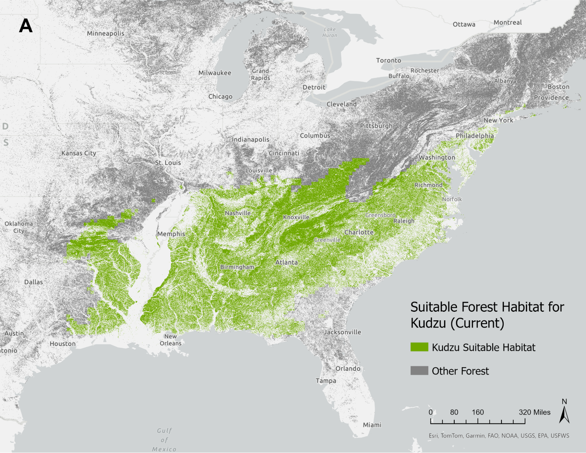

Identifying forest areas threatened by invasive Kudzu under climate change
A climate change suitability analysis of Kudzu habitat in the southeastern United States
Background
Kudzu (Pueraria montana) is a perennial vine native to eastern Asia which has become invasive in the United States. It is able to grow extremely quickly and outcompete native vegetation. This exacts an ecological and economic toll, particularly on timber forests which suffer productivity losses due to kudzu growth (Herron et al., 2020). Currently found across much of the southeastern U.S., kudzu may continue to spread north and west as climate change creates more favorable environmental conditions (“Kudzu: The Invasive Vine That Ate the South,” 2019).
Problem
Given the ecologically and economically taxing impact of Kudzu on forest productivity and native biodiversity, it is important to identify areas that should be restored in the face of climate change. Utilizing species distribution models can inform how Kudzu will spread under certain climate scenarios and what areas restoration projects should be planned for.
Approach
We used Maxent within the R package Wallace to create species distribution models (SDMs) of kudzu in the present day and under future climate-and-socioeconomic scenarios (SSPs). We obtained 10,000 occurrence points from GBIF for kudzu, then selected down to only those points within the contiguous United States (~5,000) and spatially partitioned them into four groups for model training. We selected a variety of WorldClim Bioclim variables (Table 1) for precipitation and temperature based upon a brief review of relevant literature and knowledge of kudzu’s ecological niche (Callen & Miller, 2015; Kovach-Hammons et al., 2023). We extracted this data from 10,000 background points within a 5 degree buffer of our occurrence points. We used the Maxent algorithm to model current habitat suitability for kudzu, setting linear and quadratic feature classes to account for linear and non-linear relationships. We set the regularization parameter as 1.5 to avoid over-fitting our model and to determine a simpler complexity. Clamping was set as ‘true’ to constrain our variables within the focal range and parallel processing was set as ‘false.’ Using the MIROC6 climate model, we then transferred our model to a future scenario of moderate climate-and-socioeconomic change (SSP 370) for the years 2041-2060.
In ArcGIS Pro, we processed our SDMs along with the 2019 NLCD data (30m resolution, contiguous U.S.) to find forested areas that overlapped with current and predicted kudzu presence. We used the SDMs for the present day, and for SSP 370 in 2041-2060. We ensured all our data layers were in the Albers equal-area conic projection to preserve area for our calculations, and resampled our data to a 1km resolution for faster processing time. We reclassified and isolated just the forested areas from NLCD (encompassing deciduous, evergreen, and mixed forests) and intersected these with areas of kudzu presence (defined as SDM probabilities > 50%).
Results
We found a total forested area of 496,114 km2 was currently at risk of kudzu occupation, mainly across the southeastern U.S. (Figure 1). The area between Charlotte, NC and Knoxville, TN is particularly concentrated with current suitable forest habitat for kudzu. In 2041-2060 under SSP 370, we found that a forested area of 555,508 km2 would be at risk of kudzu occupation (Figure 2). While still mainly predicted to be within the southeastern U.S., kudzu may also be found as far north as Pittsburgh and Boston in this future scenario.

Conclusion
Estimated to cost greater than $500 million annually in damages and loss of forest productivity, kudzu is expected to spread and cause increases in economic losses under climate change (Blaustein, 2001). Due to kudzu’s significant economic and ecological impact on forests in the southeastern U.S., it is necessary to identify suitable areas under climate change scenarios to target invasive species mitigation strategically. The northward spread of kudzu highlights opportunities to integrate invasive species prevention measures in northern areas while also highlighting restoration opportunities in regions that are deemed to be no longer suitable for kudzu under future climate change. Restoration and prevention measures will be costly, and given the economic toll kudzu has already enacted on forest ecosystems, it will require proper prioritization, communication, and stakeholder engagement to successfully complete these types of projects.